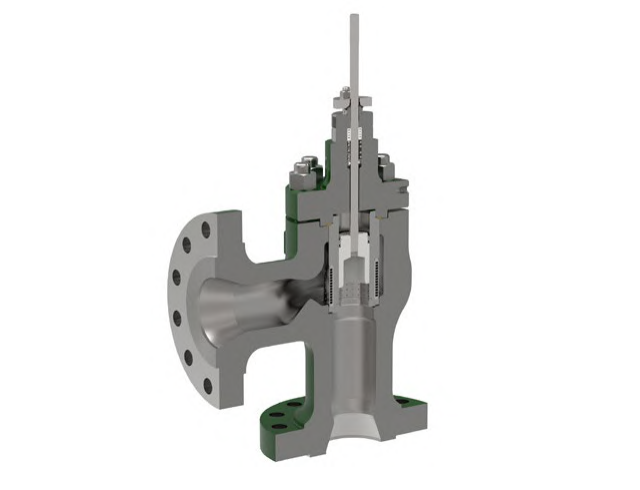
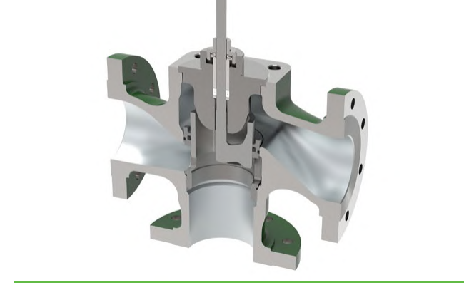

Angle vs. Three-Way Body Styles
Angle body

Flow turns 90° through the body — for erosive or high-pressure-drop service
Three-way body

Combines or diverts flow through one body — instead of the straight-through path a standard globe body uses
After Control Valve Handbook, 6th ed., Figs. 1.4, 1.8 — used directly. Component Index: cvh-cmp-angle-valve-photo, cvh-cmp-three-way-globe-valve-overview.